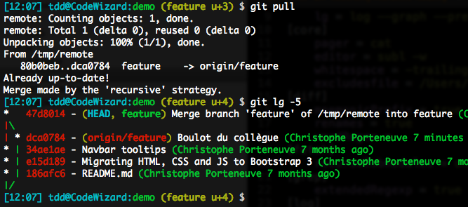
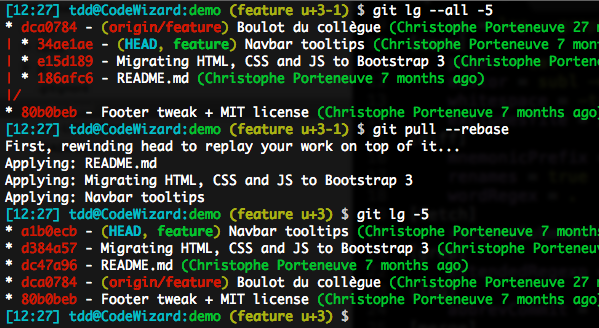
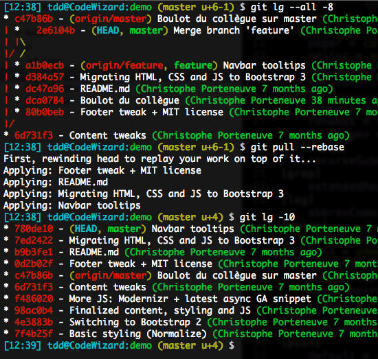
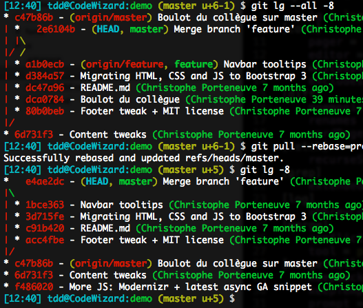

- Git basics and general info
- Interesting stuff for the team - agreements
- Q. Questions? A. Any time.
- Really hard to f# anything up. Great!
- But this can be quite complex.
- With many git commands & options.
- We get fine-grained control.
- So, first learn the details, only than abstract them away.
git fetch + git tree = knowing what will happen beforehand.- ps. git aliases are nice.
- ps2. zsh is very nice.
Git vs. SVN: a distributed nature
- Git data stored locally (.git)
- Origin: a simple swarm member with a special role
- Forking & pull requests, upstream repositories
"All animals are equal, but some are more equal than other (G. Orwell, 1945)"
- (Permanent) deployment branches (master, ~develop)
- Feature branches
- Dependent features - branch of branch
- Strong advice: keep your feature branch up to date (with rebase)
- Advice: delete merged branches, remotely as well (and pull --purge)
A very useful UI for origin. Did you push? The answer is there.
- Take care of your projects history. Code is a pet.
- Do this:
- Locally
- On your feature branch
- End goal: on master
- Make small functional commits
- Possibly use the commit description for more in-depth comments
git commit --amendgit rebase --interactive (demo after next chapter)
| |_|_|_|_|_|/
|/| | | | | |
* | | | | | | db56e45 DBZEXP-843: Adding ...
| |_|_|_|_|/
|/| | | | |
* | | | | | 9ac74e7 DBZEXP-930: Sorted ...
* | | | | | 2a79226 DBZEXP-927: Swapped ...
* | | | | | 3af8097 DBZEXP-930: Sorted ...
| |_|_|_|/
|/| | | |
* | | | | 044fb82 DBZEXP-929: Tekstuele ...
| |_|_|/
|/| | |
* | | | 6d1f452 DBZEXP-833 Textual ...
| |_|/
|/| |
* | | 743d1ec DBZEXP-665: Fixed ...
| | | * f0efe8d (origin/feature-prefill, feature-prefill) Merged latest Dev changes into feature branch ...
| | |/
| |/|
| * | 88f176b Changed ...
| * | fddb763 Reverted ...
| * | 2fb3512 Merge remote-tracking branch 'origin/feature-prefill' into feature-prefill
| |\ \
| | * | c56c1bf DBZEXP-665: Removed ...
| * | | 46dc09f Merge remote-tracking branch 'origin/feature-prefill' into feature-prefill
| |\ \ \
| | |/ /
| | * | 3c15e99 Changed ...
| * | | 7e29718 Invulhulpen ...
| |/ /
| * | 79c01b4 DBZEXP-772: Refactored ...
| * | 024c9cb DBZEXP-651: ...
|/ /

- What happens in case of conflicting changes?
- And who is boss? What is truth?

=> globally set pull.rebase = true
What if you locally have a functional merge?

Preserve: a sensible option

=> globally set pull.rebase = preserve
Action: make sure your Git version is up to date
Keeping code up to date: git rebase
Get your history in check: git rebase --interactive
The catch: history changes => force pushes